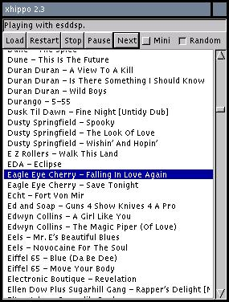

![[image of the Head of a GNU]](/graphics/gnu-head-sm.jpg)
GNU xhippo is a generic playlist manager program for a variety of Unix sound players. It's been shown to work with mpg123, bplay, s3mod, tracker, xmp and timidity, and should work with more-or-less anything that can take a filename on the command line. (The latest versions of all of these players may be found through Freshmeat's Appindex.) It is capable of automatically deciding which player to use depending on a file's extension; the defaults are set in a config file. It uses textual playlist files, which are easily generated with the ``find'' or ``locate'' utilities (and are compatible with most other Unix sound players). xhippo's interface is very loosely modelled on the ``HippoPlayer'' player for the Amiga.

xhippo was developed under Debian GNU/Linux, but it contains nothing Linux-specific, so it will probably work on any Unix-like system where gcc, glib, getopt_long and GTK are available; standard "ports" are available for NetBSD and FreeBSD. xhippo will optionally integrate with the GNOME desktop, supporting GNOME themes and drag-and-drop, and supports specific GTK themes through its own gtkrc. xhippo can optionally read the ID3 tags from MP3 files, and has randomisation features ensuring that you don't hear the same song over and over again.
xhippo is highly configurable both at compile-time and at runtime, and supports both German and English interfaces.
xhippo comes with no warranty, to the extent permitted by law. You may redistribute copies of GNU xhippo under the terms of the GNU General Public License.
xhippo was written by Adam Sampson, <azz@gnu.org>. Bugs and suggestions should be reported to <bug-xhippo@gnu.org>. Other contributors are credited in the ChangeLog file which can be found in the distribution.
FSF & GNU inquiries & questions to gnu@gnu.org. Other ways to contact the FSF.
Comments on these web pages to webmasters@gnu.org, send other questions to gnu@gnu.org.
Copyright (C) 1996, 1997, 1998, 1999 Free Software Foundation, Inc.
Verbatim copying and distribution of this entire article is permitted in any medium, provided this notice is preserved.
Updated: 13 Dec 2000 3diff